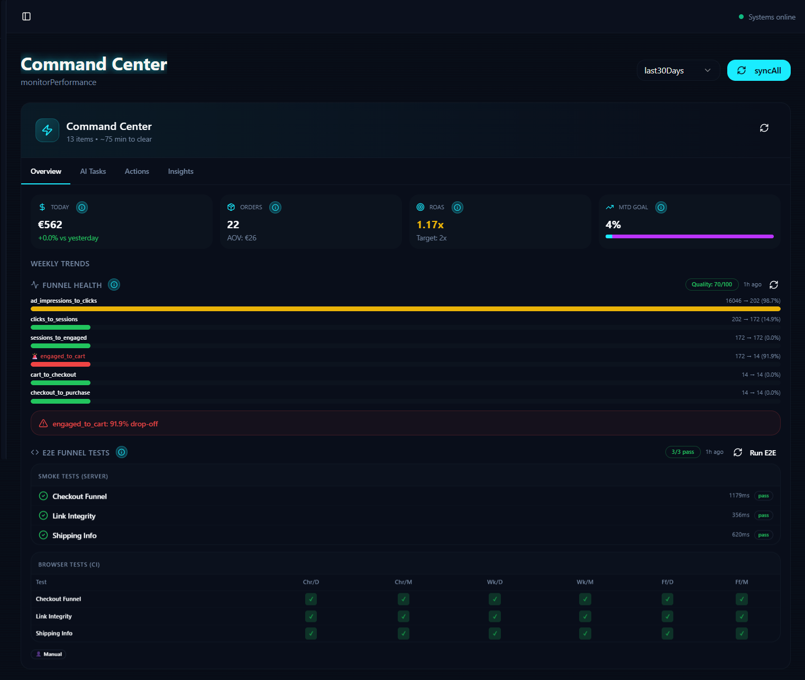

Snappyfy
A personal e-commerce system connecting a storefront with product research, marketing, fulfilment, support and an AI-assisted operations backoffice.
The challenge
Operate a headless e-commerce experiment alone. The goal was to reduce repetitive manual work by connecting market research, supplier data, campaign preparation, customer operations and AI-assisted decision support in one coordinated environment.
My contribution
Led requirements, architecture choices, AI-assisted Lovable implementation, process design, QA and integration troubleshooting. I used ChatGPT to structure briefs, translated them into scoped development prompts for Lovable, and tested the results. This demonstrates product ownership and hands-on low-code delivery, not a claim of personally coding every function.
Technology & process
The preserved React/TypeScript application includes Shopify commerce integrations, Supabase/Deno backoffice functions, CJ supplier workflows, Sendcloud returns, Firecrawl-assisted product research, Meta campaign and Creatomate creative modules, Resend email campaigns and transactional messaging, GA4/Clarity analytics, AI-assisted customer chat, and an AI Command Center with human approval checkpoints. Designed or implemented interfaces are distinct from fully verified autonomous production outcomes.
Outcome & learning
The store launched and received real orders, then closed as a commercial experiment. The preserved application and its project records demonstrate the design and iteration work; they are not proof of ongoing operations or profitability. Key lesson: more integrations create more edge cases, so reliable data, human checkpoints and clear ownership matter.